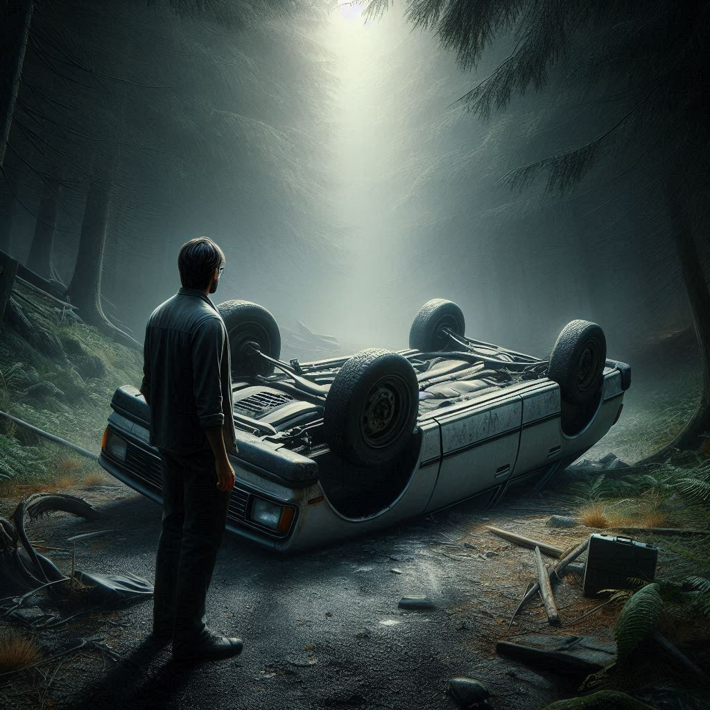

Robbie

Robbie was a twenty-nine year old man who liked to think he was a decent person. He had finished Law school with a decent grade, got a job as an intern for a while and now he was working as a lawyer for a big firm. He even had his own office with a good sized chair that rotated and a cabinet full of dossiers. A considerable chunk of that good salary of his always went towards non profit organizations or the homeless shelters in his city. Every year he got ready with food boxes and toys for Christmas, standing in line with other people and offering them to whoever was in need. He had a girlfriend named Aoife and a cat named Toto. He loved them like crazy and his favourite free time activity was cuddling on the sofa with both, girl on his arm, cat on his lap watching movies.
He called his parents often and went for dinner at their house a couple of times every month.
Robbie laughed with his friends and had the occasional drink with them but never got actually drunk. He was more of a one cocktail guy than a beer devouring machine. He disliked spirits with all his heart, but he enjoyed a glass of wine with his dinner sometimes. Never a full bottle. He preferred a clear mind any time of the day or night.
So when the accident happened and the officer shoved the breathalyser in his mouth, Robbie could have said proudly that not even 0.1% percent was in his system before even blowing in it. He had been out to the movies with some friends, Aoife waiting for him at home, probably sleeping on the couch cuddling with Toto. He had been full of popcorn and soda before he had vomited it all out anyway, but nothing else. He blew into the damn thing with his stomach free of illegal substances and his mind full of questions.
The time had been 10:45 when he had left the cinema, got into his car and went on the motorway, eager to get back home. He was listening to some k-pop, mumbling with the song, when the other car appeared right in front of him, going slow, way too slow for the motorway. The time was 11:10.
Robbie used the break and tried to steer away, but there simply wasn’t enough space for manoeuvrability. He bumped the other car’s back with his right side, his own vehicle flying into the bushes. It was a miracle he didn’t tumble or roll. In fact, he had been amazed to notice he was perfectly fine, except for a vague pain in the back of his neck from straining too hard while holding the wheel and trying to survive.
He got out of the car with difficulty (those damn bushes were dense!) and looked towards the motorway where there was no sign of the other car. There were tracks on the cement though and Robbie followed them careful not to get too close to the road where the other cars passed in high speed. Walking, he remembered he had a fluorescent vest in the boot, debated to go back for it and decided against it. If the others weren’t so lucky, they might need help fast. His phone was in his pocket. He took it out and dialled 112. He gave the operator his name and told her what had happened and while doing so, he found the other car.
The vehicle was turned over and Robbie hurried to see inside while screaming in his phone for an ambulance. ‘We need a fucking ambulance. NOW. Right the fuck now’, he said while his knees hit the ground. He turned on the phone’s torch, ignoring the lady on the other side of the phone call (she had all the details already goddammit) and looked inside. It took him three, maybe four seconds to understand what he was seeing before turning around and vomiting all his popcorn and soda on the ground, next to the car that was a collective coffin for three people. There were only two adults and one very small baby.
He wiped his mouth with the sleeve of his jacket and bent down once again to look inside the car. He didn’t want to do it, but he had to make sure. The baby’s head was tilted at an impossible angle and Robbie knew he didn’t have to check anything more. The little thing (oh, God, why so small?) had been finished even before he had a chance at living. Turning towards the adults, he found himself looking into the glassy eyes of the man, his mouth opened, tongue out like he had a chance for a grimace right before kicking the bucket. Robbie didn’t think the man was alive anymore but he still forced himself to put two fingers on his skin (still warm) and check his pulse. Which wasn’t there anymore(well, would you look at that), probably because the man’s lower body was a pile of mashed organs, blood and meat tangling together like a macabre painting.
Robbie felt vomit building up in his throat once again but managed to fight the urge and keep it down as he went around the car to the woman’s side. There were pieces of glass in her blond hair, but more than that there was a big tr
Comments